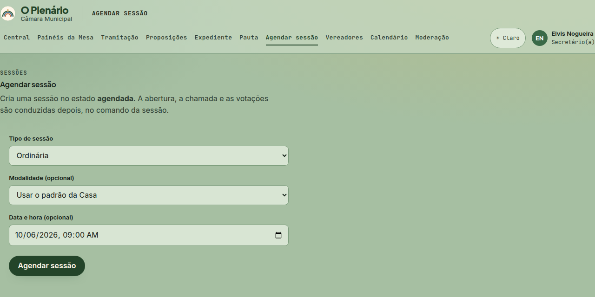

1dias antes
Agendar a sessão
Menu Agendar sessão (ou o botão da Central quando não há sessão marcada)
- Escolha o Tipo de sessão: ordinária, extraordinária, solene…
- Deixe a Modalidade em "Usar o padrão da Casa", a não ser que a sessão seja remota ou híbrida.
- Preencha Data e hora e clique em Agendar sessão.
A sessão nasce agendada. Abrir, fazer a chamada e votar só acontecem no dia, no Comando da Mesa.
